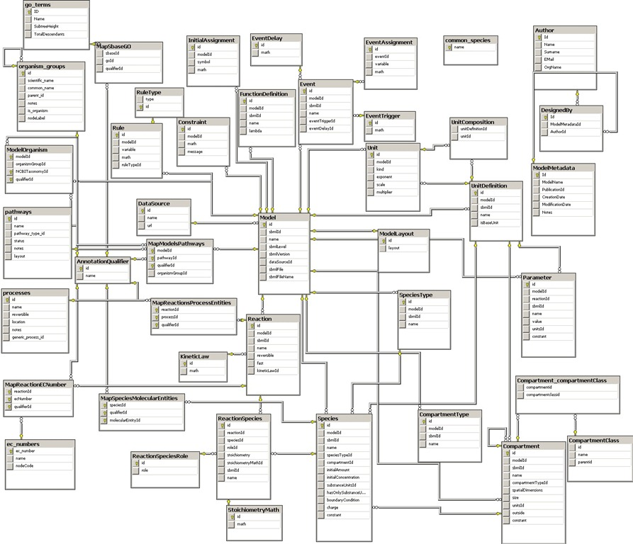

Sobre cómo rascarse una oreja
Hay veces que nos encanta rascarnos la oreja izquierda con la mano derecha, por puro complicar las cosas
Eso se da mucho en las etapas de diseño y modelamiento de datos. Un problema simple después de pasar por la etapa de análisis y diseño puede quedar así:

¡Ah!, que hermosos son estos modelos genéricos, con trazabilidad, controles de accesos, y perfiles, una orgía de tablas y relaciones (¿será que eso de las “relaciones foráneas” despierta alguna inconfesable fantasía en los analistas de sistemas?)
A veces esto se convierte en puro onanismo, originado por un axioma que fue imbuido en nuestros cerebros por un grupo de investigadores de IBM en 19691, la idea de que todo debe ser modelado en una base de datos relacional hasta la “vigésima quinta forma normal”2.
No hay que desconocer que el modelo relacional tiene sus ventajas, después de todo es el corazón de la mayoría de los sistemas transaccionales en la actualidad. A saber las bases de datos relacionales, cuando se usan adecuadamente, tienen muchas ventajas.
-
La teoría que las sustenta está basada en la lógica de primer orden y la teoría de conjuntos, por lo que es fácil de entender y explicar desde un punto de vista teórico.
-
Como las bases de datos relacionales permiten operar con conjuntos se pueden definir operaciones muy eficientes que permiten “cruzar” los datos, esto es conocido como “algebra relacional”. Un lenguaje equivalente es el “cálculo relacional” [3], ambos lenguajes teóricos permitieron crear el lenguaje de consulta estructurado SQL, un lenguaje sencillo y muy poderoso que permite extraer información desde el modelo relacional.
-
Cuando las bases de datos relacionales están bien modeladas usan eficientemente el espacio.
-
Un buen modelo permite realizar consultas que no estaban previstas, hacer nuevos cruces de información, claro que a un costo. Si los índices no existen las consultas pueden tomar tiempos cuadráticos, o peores.
Todo estos beneficios vienen de que las bases de datos relacionales promueven una estructura, sólida, tolerante a fallas, que permite validar errores semánticos o de estructura dento del mismo motor. Dadas estas ventajas posteriormente los sistemas administradores de bases de datos incorporaron otros conceptos, como la transaccionalidad, el famoso ACID (Atomicity, Consistency, Isolation, Durability), que permiten que estas bases sean tan usadas en aplicaciones empresariales (contabilidad, bancos, retail, etc.).
El otro día escuché a un importante ejecutivo decir que todo el mundo usa Oracle, o SQL Server porque sirven para resolver problemas grandes a nivel empresarial. Le comenté que Facebook almacena 135 mil millones de mensajes al mes en una base de datos no relacional, pero ni aún así entendió. Es el típico caso de razonamiento motivado.
Si bien casi todo problema se puede modelar con una base de datos relacional, no siempre conviene resolver un problema con una base de relacional. Ya les mostré un ejemplo en que un programa en C puede ser más eficiente que procesar una simple sentencia SQL, claro requiere más trabajo de desarrollo, pero ahí viene el arte y la ciencia, conocer y usar la herramienta adecuada para cada tipo de problema.
Consideren este modelo:
class Book {
String title
String author
Integer year
Integer pages
Set keywords
Set ratings
}
Versus este otro
class Book {
Integer id
String title
String author
Integer year
Integer pages
}
class Keyword {
Integer id
String keyword
Integer bookId
}
class Ratings {
Integer id
String rating
Integer bookId
}
Si tienes un sistema de ventas de libros por internet es mucho más conveniente desde un punto de vista semántico usar el primer modelo, con una sola clase Book, que contiene toda la información relevante en un sólo lugar. Como normalmente el usuario va a interactuar con un libro a la vez este modelo es más simple y directo.
Si vas a hacer estadísticas u operaciones agrupadas sobre los libros, el segundo modelo te conviene más. Pero considera que esas operaciones también las puedes ejecutar mediante algún mecanismos tipo Map Reduce en otro horario, o en una base offline.
Las bases de datos no relacionales permiten abordar el mismo problema, pero a veces desde una perspectiva más simple, y muchas veces más ágil. Pronto veremos algunos ejemplos. Lo importante es tener una mente abierta y considerar que hay formas más simples de rascarse una oreja.
-
Edgar F. Codd, investigador británico trabajando en IBM en 1969 propuso la teoría de las bases de datos relacionales en una serie de papers a comienzos de la década de 1979, recibió el premio Turing en 1981. ↩︎
-
Hasta la fecha se conocen 6 formas normales, pero la imaginación de un académico no tiene límites. ↩︎